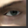

 Indigo Prophecy
Details
 |
|
| Playtime | 8m 0s |
| Last Activity | 1/2/1970 1:00:00 |
| Added | 8/19/2023 14:50:24 |
| Modified | 8/19/2023 15:09:03 |
| Completion Status | Played |
| Library | Steam |
| Source | Steam |
| Platform | PC (Windows) |
| Release Date | 9/16/2005 |
| Community Score | 83 |
| Critic Score | 85 |
| User Score | |
| Genre | Adventure |
| Developer | Quantic Dream |
| Publisher | Atari |
| Feature | Single Player |
| Links | Official Wikipedia Steam GOG Wikia Twitch |
| Tag | |
Description
You lead an ordinary life. You have friends, a job and an everyday routine. Then, one day, it all ends. You find yourself standing over a dead body with a bloody knife in your hand. You have no idea who the victim is but one thing is certain — you've killed him. Without any recollection or reason, you can only guess at what possessed you to do this. But possession is exactly what it is. Unknown to you is that forces of an ancient prophecy are at work, with the fate of mankind hanging in the balance. As you keep one step ahead of the cops, discover what lies beneath these supernatural events... and uncover their connection to an inexplicable crime wave sweeping the city.
Experience truly innovative gameplay where every decision, from interrogation questions to physical movement, affects the entire drama. Assume multiple roles to create the action — and suffer the consequences — of this unfolding ever-changing mystery. No two story paths are ever the same in this endlessly replayable adventure that recalls the most thrilling supernatural mystery movies.
- Control an eerie supernatural storyline as the plot develops; make split-second decisions, interrogate witnesses and more... every decision affects future actions and scenes
- Take on the role of one of four characters: regular guy-turned-murderer Lucas Kane, Detective Carla Valenti, Detective Tyler Miles, and Lucas' brother Marcus Kane
- Manage the characters' mental stability through 44 bone-chilling acts; choose the correct course of action to maintain a delicate psychological balance
- Navigate freely through the game's varied settings, witnessing action through dramatic multi-view split-screens
- Experience Hollywood-style action sequences, with character models created by more than 50 stuntmen
- Enter the Indigo Prophecy world via top-flight acting performances, multi-camera views, motion tracking and a spine-tingling music score